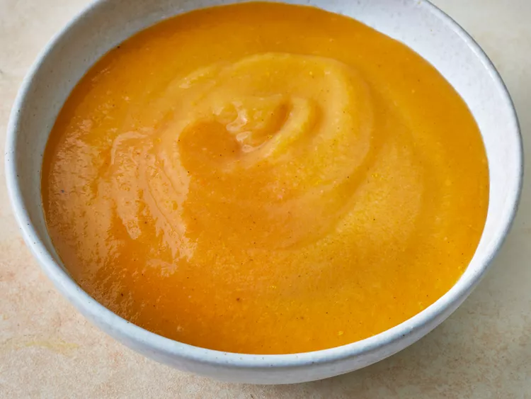

Butternut squash soup

Description
This is very good butternut squash soup, perfext for a cool fall day.
The whole soup is very simple and requires only a few ingredients.
Ingredients
- 2 tablespoons butter
1 small onion, chopped
1 stalk celery, chopped
1 medium carrot, chopped
2 medium potatoes, cubed
1 medium butternut squash - peeled, seeded, and cubed
1 (32 fluid ounce) container chicken stock
salt and freshly ground black pepper to taste